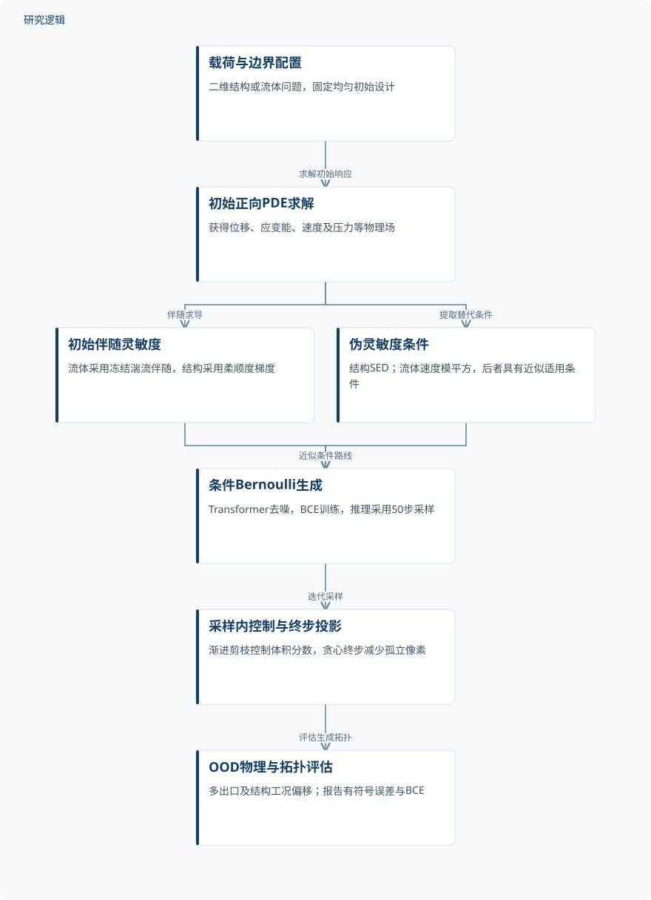
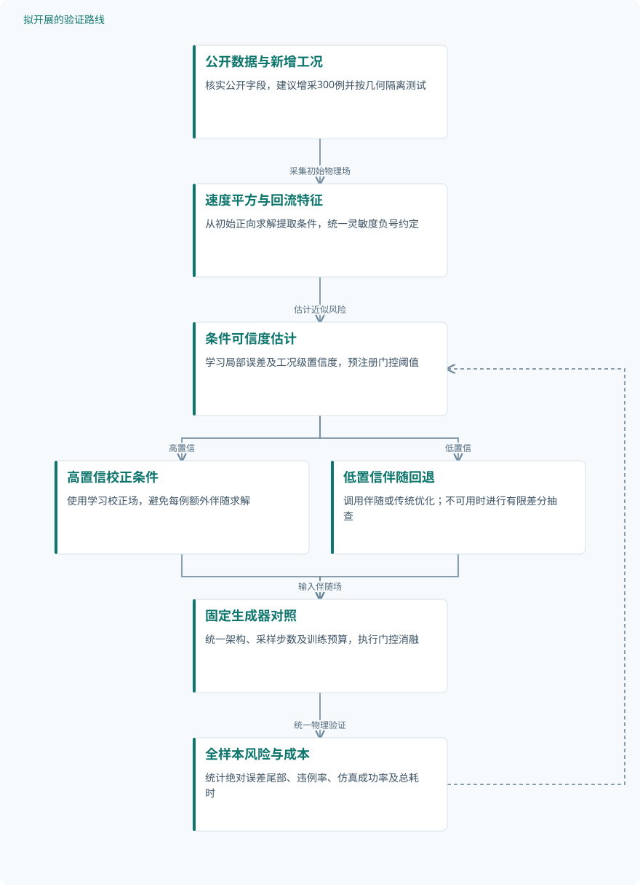

论文精读
灵敏度条件化伯努利流匹配驱动的拓扑优化泛化研究
On the Generalization in Topology Optimization via Sensitivity-Conditioned Bernoulli Flow Matching
精读更新 2026-10-06 22:31 · 依据论文全文整理
拓扑优化代理模型为何在训练工况内表现出色，换一组载荷或出口却可能失效？本文把解释重点从网络规模转向条件信号：它是否保留了驱动经典优化的灵敏度信息。作者结合信息论分析、伪灵敏度与Bernoulli流匹配，在二维结构和流体任务中验证这一思路。阅读价值不仅在于误差改善，更在于辨清初始物理场、生成机制与物理可行性各自能解决什么问题。
文章目录
泛化瓶颈可能藏在条件场，而非网络容量
经典拓扑优化通过反复求解正向与伴随PDE更新材料分布，代理模型则希望直接预测优化后的拓扑。困难在于，载荷和边界配置变化会同时改变物理响应与目标几何；仅输入原始参数，未必能让网络识别新的材料布局规律。
本文提出以条件信号保留的灵敏度信息解释泛化差异，并区分条件、架构和生成方式的贡献。其主要生成验证限定于二维线弹性结构与二维稳态RANS流动，不能直接外推到三维、瞬态或路径依赖问题。
从初始灵敏度到二值拓扑的生成链条
作者将优化过程抽象为Θ→X→S₀→ρ⋆，分别对应问题参数、初始物理场、初始灵敏度和收敛拓扑。数据处理不等式在该Markov假设下给出条件信息排序，但不是无条件的OOD性能保证；附录的KKT论证针对终端灵敏度，也不能直接证明S₀严格充分。
伪灵敏度允许用单调变换后的物理场近似S₀，从而避免额外伴随求解。结构柔顺度问题中，均匀初始设计的应变能密度与负灵敏度成正比；流体速度模平方的近似则依赖冻结湍流和局部Stokes型平衡，不能仅凭高全局雷诺数成立。
生成器采用αₜ=(1−t)·0.5+t·x₁的Bernoulli概率路径，以BCE训练条件去噪器，层级Transformer通过交叉注意力读取条件场。推理使用50步采样，终步贪心投影减少孤立像素；采样内渐进剪枝控制体积分数，但这些组件尚缺独立的大样本可行性验证。
原研究：灵敏度相关条件驱动二值拓扑生成


展示已实现的方法与验证链条；条件信息排序依赖Markov假设，生成结果仍需物理评估。
下载 SVG图示关系说明
实线表示相邻阶段的信息流，虚线表示跨阶段联系或反馈。
载荷与边界配置 → 初始正向PDE求解：求解初始响应；初始正向PDE求解 → 初始伴随灵敏度：伴随求导；初始正向PDE求解 → 伪灵敏度条件：提取替代条件；初始伴随灵敏度 → 条件Bernoulli生成：精确条件路线；伪灵敏度条件 → 条件Bernoulli生成：近似条件路线；条件Bernoulli生成 → 采样内控制与终步投影：迭代采样；采样内控制与终步投影 → OOD物理与拓扑评估：评估生成拓扑
单出口训练，多出口测试：验证究竟覆盖了什么
CFD数据由STAR-CCM+稳态RANS和realizable k–ε模型生成，统一到128×128网格。单出口训练10,000例、ID测试1,000例，双出口和三出口各测试500例；入口数量与物性也变化，验证集、增强数量及独立性核查未报告，不能把实例数等同于独立求解次数。
CFD比较DiT、UDiT和PDE-T，并交叉改变灵敏度、速度平方与压力条件；各模型最终训练预算不同，不是严格等预算对照。结构沿用TopoDiffusion和NITO基准，包含未见载荷及新边界配置，但训练测试规模未报告；所给证据均为数值验证，没有实物试件实验。
两类物理误差均为有符号相对误差，均值可能掩盖正负抵消。CFD排除相对初始几何偏离超过50%的预测，结构排除柔顺度误差超过1000%的预测；剔除比例和筛选前结果未报告，因此表中表现不能代表全部生成样本。
| 验证任务 | 样本与规模 | 主要结果 |
|---|---|---|
| CFD多出口OOD性能比较与计算成本 | 训练10,000例，ID测试1,000例，双出口及三出口各500例；独立求解总次数、增强数量及计时重复次数未报告。 | 本文ID、双出口、三出口平均误差分别3.68%、6.38%、6.12%；三出口中位数2.70%、准确率74.5%。伪灵敏度端到端约3.2 s，精确灵敏度约8.5 s，完整优化113.94 s。 |
| CFD条件信号与架构交叉消融 | 总体测试规模为ID 1,000例、双出口及三出口各500例；各子实验实际使用数量、重复训练次数未报告。 | 本文三出口中位BCE：灵敏度0.22、速度0.38、压力0.46。另一交叉表中，UDiT伪灵敏度中位压降误差7.0%，本文压力条件为100.0%。 |
| 结构柔顺度条件消融与OOD基准比较 | 独立结构、训练验证测试数量、仿真总次数与增强数量未报告；代表性图展示数量不等于测试集规模。 | 灵敏度、SED条件中位误差为0.54%、0.53%；灵敏度确定性模型2.27%。OOD基准平均/中位误差：本文5.73%/0.53%，TopoDiff 8.57%/1.14%，NITO 9.33%/2.37%。 |
| 跨PDE初始灵敏度排序判别力验证 | 四类PDE是任务类别数量，不是独立样本数；各类别样本、仿真和增强数量未报告。 | 热传导、NS三出口、特征频率、柔顺度的S₀/S⋆ AUC依次为0.972/0.986、0.993/1.000、0.957/0.868、0.915/0.918。 |
展开数据来源、分组、对照与验证边界
CFD多出口OOD性能比较与计算成本
数据来源。STAR-CCM+生成二维稳态RANS通道数据，采用realizable k–ε模型，场插值至128×128。
分组与工况。训练单出口、入口1–11个；双出口测试入口1–10个，三出口入口1–9个；密度和黏度独立均匀采样。
数据划分。只有单出口参与训练；三个工况组分别测试。验证集、去重规则及几何配置隔离细节未报告。
对照与消融。灵敏度条件DiT、UDiT、PDE-T及STAR-CCM+单次优化迭代；计时另列完整优化和NITO加5步SIMP。
评价指标。有符号压降相对误差的均值±标准差、中位数，以及误差在目标值10%以内的比例；另报告每样本耗时。
验证边界。ID并非最佳，双出口准确率72.3%低于DiT的79.4%；几何偏离超过50%的样本被排除，数量未报告。训练预算不同，NITO计时边界未统一。
CFD条件信号与架构交叉消融
数据来源。CFD-TO数据上的条件比较、架构交叉比较与累加消融；不同表的测试配置不能直接互换。
分组与工况。压力、速度模平方伪灵敏度、灵敏度三个条件组，覆盖DiT、UDiT、PDE-T及本文模型。
数据划分。采用单出口训练和ID、双出口、三出口测试；条件仿真表中OOD的具体构成未报告。
对照与消融。条件与架构交叉对照；另依次加入伪灵敏度条件、架构增强和BFM，后者属于累加而非完整因子消融。
评价指标。中位BCE、压降有符号相对误差及定性通道布局；BCE聚合细节与边界违例率未报告。
验证边界。不同表的压力结果不能合并；ID存在灵敏度与速度并列或速度略优的情况。累加消融不能完全分离模块交互，未提供统计显著性。
结构柔顺度条件消融与OOD基准比较
数据来源。沿用TopoDiffusion和NITO的二维线弹性基准，包含悬臂、桥状结构及未见载荷和边界配置。
分组与工况。灵敏度、SED、位移、物理参数条件；生成与确定性模型对照；另比较各方法的结构OOD性能。
数据划分。包含未见载荷模式与新边界配置的OOD测试，具体划分数量、参数范围和隔离规则未报告。
对照与消融。条件与确定性模型消融；基准为TopoDiff、TopoDiff w/ G和NITO，NITO输出后增加5步SIMP。
评价指标。交叉熵标度×10⁻¹，温度T=15；有符号柔顺度相对误差的均值和中位数；参数量及额外SIMP步数。
验证边界。误差超过1000%的样本被排除，比例未报告；重复训练与置信区间缺失。参数量及后处理步数不能单独证明速度优势。
跨PDE初始灵敏度排序判别力验证
数据来源。热传导、NS三出口、特征频率和柔顺度四类PDE；热传导与特征频率为新生成数据。
分组与工况。每类分别比较初始灵敏度S₀、收敛灵敏度S⋆和仅按体积分数阈值化的结果。
数据划分。各类数据的训练验证测试划分及是否独立于生成模型训练数据未报告。
对照与消融。收敛灵敏度作为排序能力对照，体积分数阈值作为不学习空间拓扑的直接提取基线。
评价指标。ROC AUC：衡量最终实体单元与空隙单元的排序判别力；Δ为AUC(S⋆)−AUC(S₀)，均无量纲。
验证边界。没有样本量、误差条及重复统计；特征频率的终端AUC反而下降。排序能力不能直接证明拓扑重建质量或物理可行性。
条件信息的证据较强，可行性与效率仍须限定口径
本文模型在三出口OOD中的平均压降误差为6.12%、中位数2.70%，但ID不如神经基线，双出口准确率也低于DiT。结构OOD平均柔顺度误差为5.73%，低于TopoDiff的8.57%和NITO的9.33%；不同条件表的0.54%与基准表的0.53%中位数应分别保留。
条件消融支持灵敏度相关场更稳健，但交叉熵只是条件熵上界，不能直接测量真实互信息。速度平方相关图显示强负相关，不能照正文简写成正相关；本站判断，流体附录的伴随符号及比例系数解释仍需澄清，高相关也不等于最终设计可行。
纯网络推理为0.65 ms/样本，获取伪灵敏度并推理约3.2 s，精确灵敏度路线约8.5 s，说明物理求解仍主导成本。硬件已有报告，但相对NITO的计时边界未统一；禁入区、预算收紧和终步投影各展示4例，尚不足以证明普遍连通或严格约束满足。
从这篇论文走向下一项研究
以下为结合研究方向提出的候选方案，实验设计与预期目标有待验证。
面向过渡流动的伪灵敏度可信度与选择性伴随校正
问题与短板。原研究对冻结湍流灵敏度的相关性较强，却缺少过渡雷诺数、回流区域的失败统计。建议首先回答何时速度平方不再足够，而不是继续扩大生成器容量。
改进机制。建议由速度、压力和回流特征估计伪灵敏度的局部误差及置信度，低置信工况才调用伴随求解。训练校正场时统一负号约定，并区分冻结湍流导数与完整设计导数。
候选创新。候选创新是把条件可信度、选择性伴随计算与Bernoulli生成组合成可拒绝预测的流程。各单项机制并非新颖性结论，需验证组合是否改善成本与失败风险的权衡。
数据与实验设计。可先使用作者声明公开的CFD数据，核实许可与字段；建议新增300例，按低、过渡、高Re各100例并平衡出口配置。按几何隔离测试，新增完整导数需另行采集且取决于求解器能力。
对照与消融。固定生成架构与采样预算，比较原速度平方、始终精确灵敏度、学习校正和置信门控。消融去掉回流特征、校正及拒绝机制，并统一计入条件求解和失败重算耗时。
成功判据。建议预注册以全样本绝对误差尾部、边界违例率和可仿真率为主指标，辅以有符号误差。只有失败风险下降且总耗时低于始终伴随路线，才支持机制有效。
风险与替代方案。完整湍流导数可能不稳定或无法取得，置信度也可能在新几何下失准。替代方案是有限差分抽查局部导数，并对高风险样本回退传统优化，不把拒绝样本隐藏于均值。
检验初始灵敏度在路径依赖结构设计中的充分性边界
问题与短板。原文从终端KKT关系解释初始条件，却未充分验证多目标和历史依赖约束。建议研究相似S₀是否对应不同可行终态，明确单场条件何时出现不可约歧义。
改进机制。建议给生成器补充早期梯度变化、体积乘子和约束余量，通过短优化轨迹提供历史信息。保持二值生成主干不变，用受控信息增量检验性能变化来自历史还是容量。
候选创新。候选创新是建立初始场充分性的诊断与最小历史条件选择。相关预印本《Structure-agnostic Causal Representation Learning》的摘要提示结构误设风险，但不能据此认定其方法已适用于拓扑优化。
数据与实验设计。建议先复用可获得的线弹性基准，再仿真采集240组载荷—支承配置，每组分别求解柔顺度和带路径约束目标。按配置而非像素划分测试，并保存相同初始化下的早期梯度。
对照与消融。比较仅S₀、S₀加约束参数、加入早期轨迹和完整传统优化；配平网络容量与计算预算。消融打乱轨迹顺序、移除乘子及仅增加参数量，以排除额外输入规模的影响。
成功判据。建议以未见配置的绝对目标误差、约束违例率和失败尾部为判据，报告多随机种子区间。只有历史条件在相似S₀子集仍稳定获益，才支持初始场存在信息缺口。
风险与替代方案。所谓相似初始场可能只是归一化或网格插值造成，轨迹输入也增加求解成本。替代路径是先用受控小规模问题核查歧义，再评估短轨迹收益是否抵消物理计算开销。
拟议路线：置信门控的伪灵敏度校正


对应第一条研究建议，所有性能改善均待实验验证，不代表原论文实测结果。
下载 SVG图示关系说明
实线表示相邻阶段的信息流，虚线表示跨阶段联系或反馈。
公开数据与新增工况 → 速度平方与回流特征：采集初始物理场；速度平方与回流特征 → 条件可信度估计：估计近似风险；条件可信度估计 → 高置信校正条件：高置信；条件可信度估计 → 低置信伴随回退：低置信；高置信校正条件 → 固定生成器对照：输入校正场；低置信伴随回退 → 固定生成器对照：输入伴随场；固定生成器对照 → 全样本风险与成本：统一物理验证；全样本风险与成本 → 条件可信度估计：校准门控